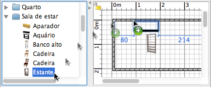

| Adicionando mobília | |||
Para adicionar mobílias em sua casa, arraste e solte uma ou mais peças de mobília do catálogo para o plano da casa ou da lista de mobília.  Você também pode selecionar várias peças no catálogo, então escolha Mobília > Adicionar na casa ou clique na ferramenta Adicionar na casa.
Quando as peças são colocadas no plano, a localização de seu canto esquerdo superior é o ponto onde você soltar o botão do mouse. As peças adicionadas na casa são selecionadas e desenhadas simultaneamente na lista de mobílias, no plano e na visão 3D. Durante o carregamento do modelo 3D, as peças são representadas como caixas brancas na visão 3D. |
|